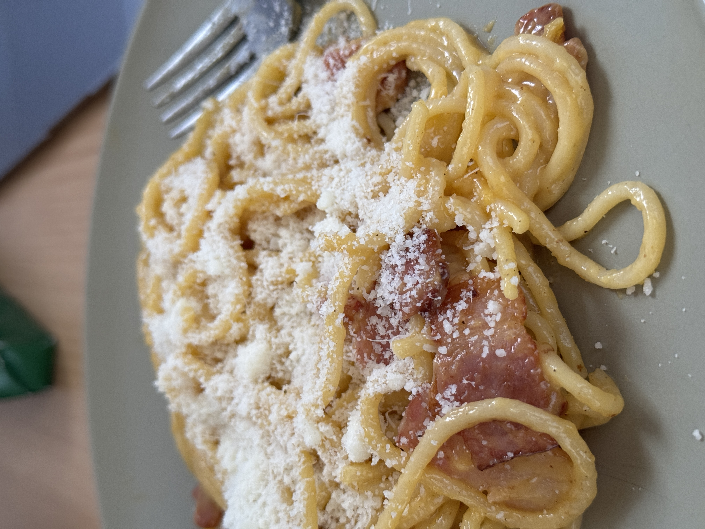

Pasta carbonara
Home

Description
A classic in Italy, a complete disaster in any other country! But no worries, today we'll see how to make a traditional nice carbonara plate - though considering I'm not Italian.
It's usual to think that this recipe takes time and experience, but the truth is that, with the right ingredients, it's quite easy to make. And without having to annoy any Italian!
Ingredients
For two people:
- 200g of spaghetti
- 3 eggs
- 60g of cheese Pecorino Romano
- 100g of guanciale strips
Steps
- Put the pasta to boil with a generous amount of salt, boil for as long as the package of pasta says, to leave it al dente. Save some cooking water in a bowl.
- Put a pan to heat over medium heat, and add the guanciale without olive oil. The fat of the guanciale should be enough to cook it. Cook until it's crispy on the outside and leave aside.
- In a bowl, add two egg yolks and one whole egg, beat it and add the cheese with a generous amount of pepper. If the mixture is a bit thick, you can add some cooking water to make it more creamy.
- Once the pasta is cooked, mix it in the pan with the guanciale, then add the mixture of eggs and cheese, and mix quickly. If the sauce is still thick, add some more cooking water. And finally, enjoy!